Matplotlib作图
Boylad · 2019-12-15
import numpy as np
import matplotlib.pyplot as plt
plt.figure(figsize=(5, 3), dpi=80)
X = np.linspace(-np.pi, np.pi, 256, endpoint=True)
C,S = np.cos(X), np.sin(X)
plt.xlim(X.min()*1.2, X.max()*1.1)
plt.xticks([-np.pi, -np.pi/2, 0, np.pi/2, np.pi],
[r'$-\pi$', r'$-\pi/2$', r'$0$', r'$\pi/2$', r'$\pi$'])
plt.ylim(C.min()*1.1, C.max()*1.1)
plt.yticks([-1, 0, 1], [r'$-1$', r'$0$', r'$+1$'])
plt.plot(X, C, color='blue', linewidth=2.5, linestyle='-')
plt.plot(X, S, color='red', linewidth=2.5, linestyle='-.')
plt.show()
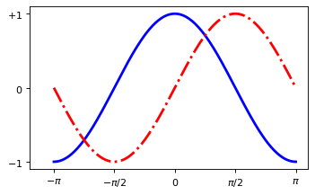
plt.figure(figsize=(8, 5), dpi=80)
ax = plt.subplot(111)
ax.spines['right'].set_color('none')
ax.spines['top'].set_color('none')
ax.xaxis.set_ticks_position('bottom')
ax.spines['bottom'].set_position(('data', 0)) # 位置：数据空间的0点
ax.yaxis.set_ticks_position('left')
ax.spines['left'].set_position(('data', 0))
X = np.linspace(-np.pi, np.pi, 256, endpoint=True)
C,S = np.cos(X), np.sin(X)
plt.xlim(X.min()*1.2, X.max()*1.1)
plt.xticks([-np.pi, -np.pi/2, 0, np.pi/2, np.pi],
[r'$-\pi$', r'$-\pi/2$', r'$0$', r'$+\pi/2$', r'$+\pi$'])
plt.ylim(C.min()*1.1, C.max()*1.1)
plt.yticks([-1, 0, 1], [r'$-1$', r'$0$', r'$+1$'])
plt.plot(X, C, color='blue', lw=2.5, linestyle='-', label='cosine', zorder=-1)
plt.plot(X, S, color='red', lw=2.5, linestyle='-', label='sine', zorder=-2)
plt.legend(loc='upper left', frameon=False)
t = 2*np.pi/3
plt.plot([t, t], [0, np.cos(t)], color='blue', linewidth=1.5, linestyle='--')
plt.annotate(r'$\cos(\frac{2\pi}{3})=-\frac{1}{2}$',
xy=(t, np.cos(t)), xycoords='data',
xytext=(-90, -50), textcoords='offset points', fontsize=16,
arrowprops=dict(arrowstyle='->', connectionstyle='arc3,rad=.2'))
plt.plot([t, t], [0, np.sin(t)], color='red', linewidth=1.5, linestyle='--')
plt.annotate(r'$\sin(\frac{2\pi}{3})=-\frac{\sqrt{3}}{2}$',
xy=(t, np.sin(t)), xycoords='data',
xytext=(+10, +30), textcoords='offset points', fontsize=16,
arrowprops=dict(arrowstyle='->', connectionstyle='arc3,rad=.2'))
# 添加白色的半透明底色，保证标签和曲线同时可见(注意zorder参数)
for label in ax.get_xticklabels() + ax.get_yticklabels():
label.set_fontsize(16)
label.set_bbox(dict(facecolor='white', edgecolor='None', alpha=0.65))
plt.show()
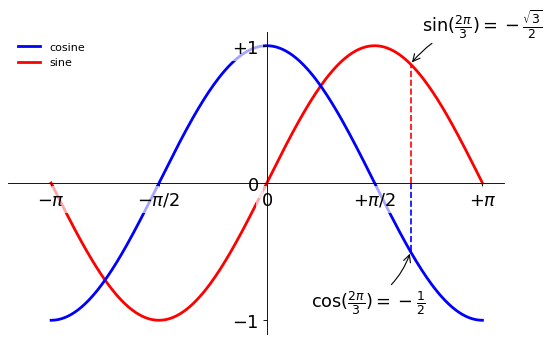
子图
from pylab import *
import matplotlib.gridspec as gridspec
G = gridspec.GridSpec(3, 3)
axes_1 = subplot(G[0, :])
xticks([]), yticks([])
text(0.5, 0.5, 'Axes 1', ha='center', va='center', size=24, alpha=.5)
axes_2 = subplot(G[1, :-1])
xticks([]), yticks([])
text(0.5, 0.5, 'Axes 2', ha='center', va='center', size=24, alpha=.5)
axes_3 = subplot(G[1:, -1])
xticks([]), yticks([])
text(0.5, 0.5, 'Axes 3', ha='center', va='center', size=24, alpha=.5)
axes_4 = subplot(G[-1, 0])
xticks([]), yticks([])
text(0.5, 0.5, 'Axes 4', ha='center', va='center', size=24, alpha=.5)
axes_5 = subplot(G[-1, -2])
xticks([]), yticks([])
text(0.5, 0.5, 'Axes 5', ha='center', va='center', size=24, alpha=.5)
show()
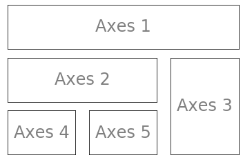
坐标轴
坐标轴和子图的功能类似，不过它可以放在图像的任意位置。
axes([0.1, 0.1, .8, .8])
xticks([]), yticks([])
text(0.6, 0.6, 'axes[0.1, 0.1, .8, .8]', ha='center',
va='center', size=20, alpha=.5)
axes([0.2, 0.2, .3, .3])
xticks([]), yticks([])
text(0.5, 0.5, 'axes[0.2, 0.2, .3, .3]', ha='center',
va='center', size=12, alpha=.5)
show()
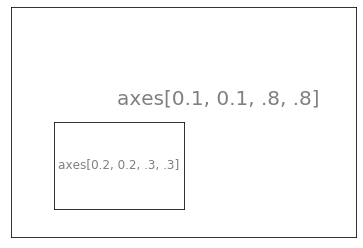
axes([0.1, 0.1, .5, .5])
xticks([]), yticks([])
text(0.1, 0.1, 'axes[0.1, 0.1, .5, .5]', ha='left', va='center', size=16, alpha=.5)
axes([0.2, 0.2, .5, .5])
xticks([]), yticks([])
text(0.1, 0.1, 'axes[0.2, 0.2, .5, .5]', ha='left', va='center', size=16, alpha=.5)
axes([0.3, 0.3, .5, .5])
xticks([]), yticks([])
text(0.1, 0.1, 'axes[0.3, 0.3, .5, .5]', ha='left', va='center', size=16, alpha=.5)
axes([0.4, 0.4, .5, .5])
xticks([]), yticks([])
text(0.1, 0.1, 'axes[0.4, 0.4, .5, .5]', ha='left', va='center', size=16, alpha=.5)
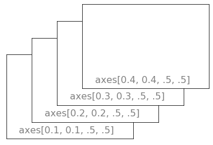
普通图
Y = np.sin(2*X)
# 等价于fig.subplots_adjust(bottom=0.025, left=0.025, top=0.95, right=0.95)
plt.axes([0.025, 0.025, 0.95, 0.95])
plt.plot(X, Y+1, color='blue', alpha=1.00)
plt.fill_between(X, 1, Y+1, color='blue', alpha=.25)
plt.plot(X, Y-1, color='blue', alpha=1.00)
plt.fill_between(X, -1, Y-1, (Y-1)>-1, color='blue', alpha=.25)
plt.fill_between(X, -1, Y-1, (Y-1)<-1, color='red', alpha=.25)
plt.xlim(-np.pi, np.pi)
plt.ylim(-2.5, 2.5)
plt.show()
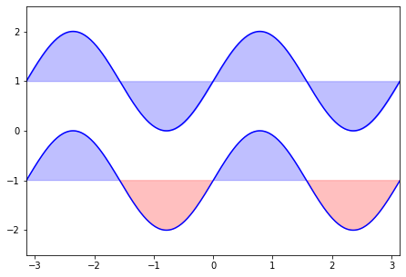
散点图
n = 1024
X = np.random.normal(0, 1, n)
Y = np.random.normal(0, 1, n)
T = np.arctan2(Y, X)
plt.axes([0.025, 0.025, 0.95, 0.95])
plt.scatter(X, Y, s=75, c=T, alpha=.5)
plt.show()
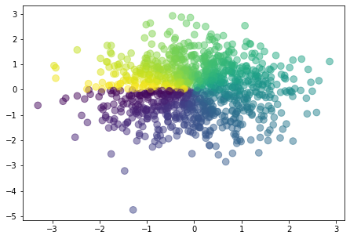
条形图
n = 12
X = np.arange(n)
Y1 = (1-X/float(n))*np.random.uniform(0.5, 1.0, n)
Y2 = (1-X/float(n))*np.random.uniform(0.5, 1.0, n)
plt.axes([0.025, 0.025, 0.95, 0.95])
plt.bar(X, +Y1, facecolor='#9999ff', edgecolor='white')
plt.bar(X, -Y2, facecolor='#ff9999', edgecolor='white')
for x,y in zip(X, Y1):
plt.text(x, y+0.005, '%.2f' % y, ha='center', va='bottom')
for x,y in zip(X, Y2):
plt.text(x, -y-0.02, '%.2f' % y, ha='center', va='top')
plt.show()
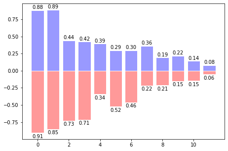
等高线图
def f(x, y):
return (1-x/2+x**5+y**3)*np.exp(-x**2-y**2)
n = 256
x = np.linspace(-3, 3, n)
y = np.linspace(-3, 3, n)
X,Y = np.meshgrid(x, y)
plt.axes([0.025, 0.025, 0.95, 0.95])
plt.contourf(X, Y, f(X, Y), 8, alpha=.75, cmap=plt.cm.hot)
C = plt.contour(X, Y, f(X, Y), 8, colors='black', linewidths=1.5)
plt.clabel(C, inline=1, fontsize=10)
plt.xticks([]), plt.yticks([])
plt.show()
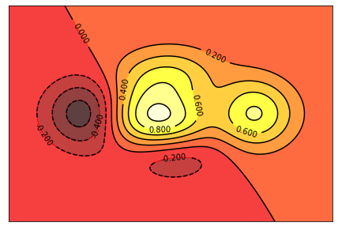
灰度图
plt.axes([0.025, 0.025, 0.95, 0.95])
plt.imshow(f(X, Y), interpolation='bicubic', cmap='bone', origin='lower')
plt.colorbar(shrink=.92)
plt.xticks([]), plt.yticks([])
plt.show()
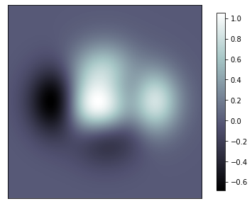
饼状图
n = 20
Z = np.ones(n)
Z[-1] *= 2
plt.axes([0.025, 0.025, 0.95, 0.95])
plt.pie(Z, explode=Z*.05, colors=['%f' % (i/float(n)) for i in range(n)],
wedgeprops={'linewidth':1, 'edgecolor':'black'})
plt.gca().set_aspect('equal')
plt.show()
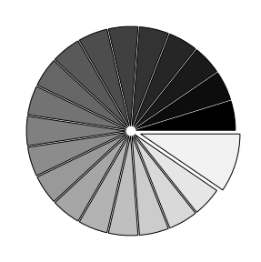
场量图（Quiver Plots）
n = 8
np.mgrid[0:n, 0:n]
array([[[0, 0, 0, 0, 0, 0, 0, 0],
[1, 1, 1, 1, 1, 1, 1, 1],
[2, 2, 2, 2, 2, 2, 2, 2],
[3, 3, 3, 3, 3, 3, 3, 3],
[4, 4, 4, 4, 4, 4, 4, 4],
[5, 5, 5, 5, 5, 5, 5, 5],
[6, 6, 6, 6, 6, 6, 6, 6],
[7, 7, 7, 7, 7, 7, 7, 7]],
[[0, 1, 2, 3, 4, 5, 6, 7],
[0, 1, 2, 3, 4, 5, 6, 7],
[0, 1, 2, 3, 4, 5, 6, 7],
[0, 1, 2, 3, 4, 5, 6, 7],
[0, 1, 2, 3, 4, 5, 6, 7],
[0, 1, 2, 3, 4, 5, 6, 7],
[0, 1, 2, 3, 4, 5, 6, 7],
[0, 1, 2, 3, 4, 5, 6, 7]]])
X, Y = np.mgrid[0:n, 0:n]
T = np.arctan2(Y-n/2.0, X-n/2.0)
R = 10+np.sqrt((Y-n/2.0)**2+(X-n/2.0)**2) # 控制facecolor颜色
U, V = R*np.cos(T), R*np.sin(T)
plt.axes([0.025, 0.025, 0.95, 0.95])
# Where X, Y define the arrow locations, U, V define the arrowirections
plt.quiver(X, Y, U, V, R, alpha=.6)
plt.quiver(X, Y, U, V, edgecolor='k', facecolor='None', linewidth=.6)
plt.xlim(-1, n), plt.ylim(-1, n)
plt.xticks([]), plt.yticks([])
plt.show()
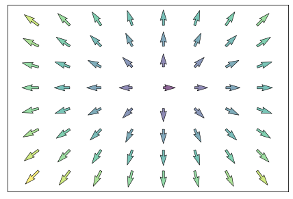
网格
ax = plt.axes([0.025, 0.025, 0.95, 0.95])
ax.set_xlim(0, 4)
ax.set_ylim(0, 3)
ax.xaxis.set_major_locator(plt.MultipleLocator(1.0)) # X major轴间隔
ax.xaxis.set_minor_locator(plt.MultipleLocator(0.1)) # X minor轴间隔
ax.yaxis.set_major_locator(plt.MultipleLocator(1.0))
ax.yaxis.set_minor_locator(plt.MultipleLocator(0.1))
ax.grid(which='major', axis='x', linewidth=1.2, linestyle='-', color='red')
ax.grid(which='minor', axis='x', linewidth=1.0, linestyle=':', color='red')
ax.grid(which='major', axis='y', linewidth=1.2, linestyle='-', color='green')
ax.grid(which='minor', axis='y', linewidth=1.0, linestyle=':', color='green')
# ax.set_xticklabels([]) # 清除x轴标签
# ax.set_yticklabels([])
plt.show()
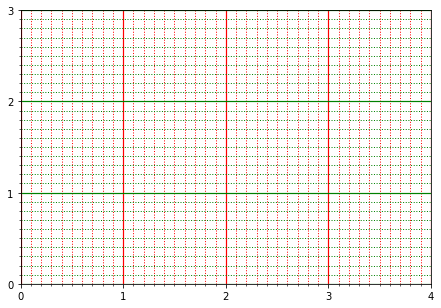
多重网格
注意，这些位置不要矛盾。
fig = plt.figure()
fig.subplots_adjust(bottom=0.025, left=0.025, top=0.975, right=0.975)
plt.subplot(3, 1, 1)
plt.xticks([]), plt.yticks([])
plt.subplot(3, 2, 3)
plt.xticks([]), plt.yticks([])
plt.subplot(3, 2, 4)
plt.xticks([]), plt.yticks([])
plt.subplot(3, 3, 7)
plt.xticks([]), plt.yticks([])
plt.subplot(3, 3, 8)
plt.xticks([]), plt.yticks([])
plt.subplot(3, 3, 9)
plt.xticks([]), plt.yticks([])
plt.show()
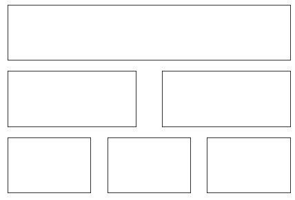
极轴图
ax = plt.axes([0.025, 0.025, 0.95, 0.95], polar=True)
N = 20
theta = np.arange(0.0, 2*np.pi, 2*np.pi/N)
radii = 10*np.random.rand(N)
width = np.pi/4*np.random.rand(N)
bars = plt.bar(theta, radii, width=width, bottom=0.0)
for r,bar in zip(radii, bars):
bar.set_facecolor(plt.cm.jet(r/10.))
bar.set_alpha(0.5)
ax.set_xticklabels([])
ax.set_yticklabels([])
plt.show()
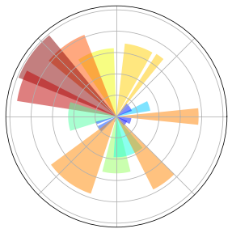
3D图
from mpl_toolkits.mplot3d import Axes3D
fig = plt.figure()
ax = Axes3D(fig)
X = np.arange(-4, 4, 0.25)
Y = np.arange(-4, 4, 0.25)
X, Y = np.meshgrid(X, Y)
R = np.sqrt(X**2 + Y**2)
Z = np.sin(R)
ax.plot_surface(X, Y, Z, rstride=1, cstride=1, cmap=plt.cm.hot)
ax.contourf(X, Y, Z, zdir='z', offset=-2, cmap=plt.cm.hot)
ax.set_zlim(-2, 2)
plt.show()

手稿图
eqs = []
eqs.append(r'$W^{3\beta}_{\delta_1 \rho_1 \sigma_2} = U^{3\beta}_{\delta_1 \rho_1} + \frac{1}{8 \pi 2} \int^{\alpha_2}_{\alpha_2} d \alpha^\prime_2 \left[\frac{ U^{2\beta}_{\delta_1 \rho_1} - \alpha^\prime_2U^{1\beta}_{\rho_1\sigma_2} }{U^{0\beta}_{\rho_1 \sigma_2}}\right]$')
eqs.append(r'$\frac{d\rho}{d t} + \rho \vec{v}\cdot\nabla\vec{v} = -\nabla p + \mu\nabla^2 \vec{v} + \rho \vec{g}$')
eqs.append(r'$\int_{-\infty}^\infty e^{-x^2}dx=\sqrt{\pi}$')
eqs.append(r'$E = mc^2 = \sqrt{{m_0}^2c^4 + p^2c^2}$')
eqs.append(r'$F_G=G\frac{m_1m_2}{r^2}$')
plt.axes([0.025, 0.025, 1.20, 1.20])
for i in range(12):
index = np.random.randint(0, len(eqs))
eq = eqs[index]
size = np.random.uniform(12, 32)
x,y = np.random.uniform(0, 1, 2)
alpha = np.random.uniform(0.25, 0.75)
plt.text(x, y, eq, ha='center', va='center', color='#11557c', alpha=alpha,
transform=plt.gca().transAxes, fontsize=size, clip_on=True)
plt.xticks([]), plt.yticks([])
plt.show()
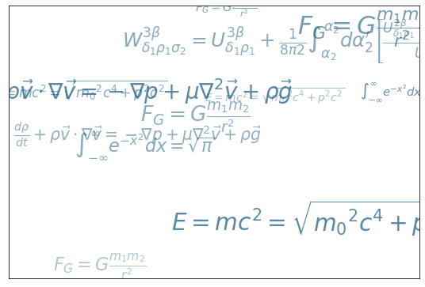